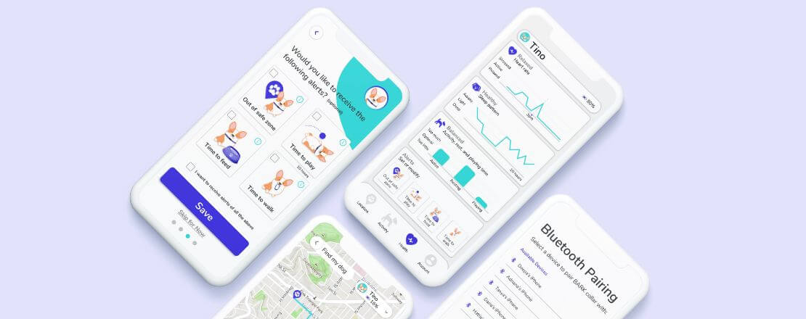
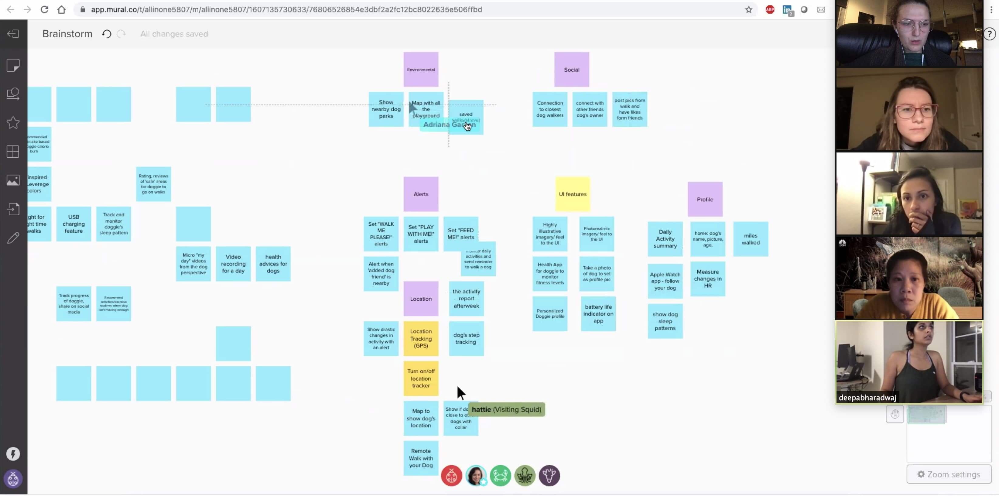
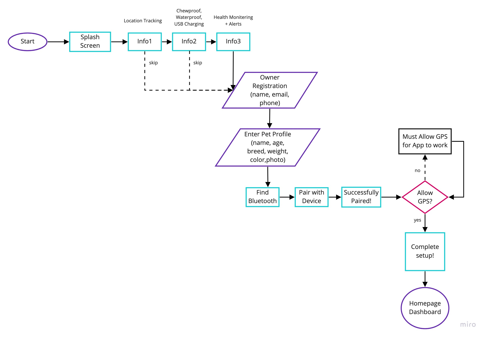
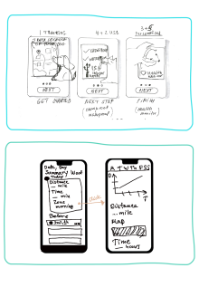
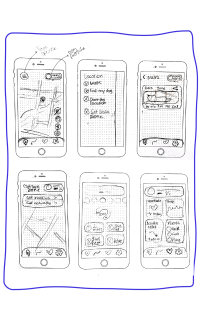
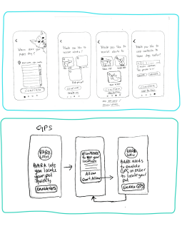
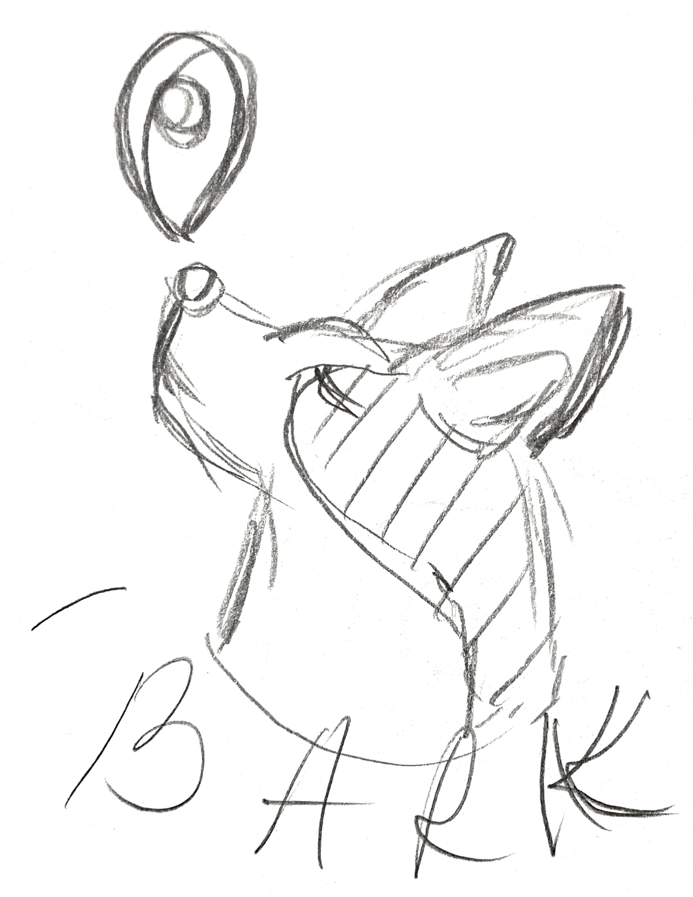
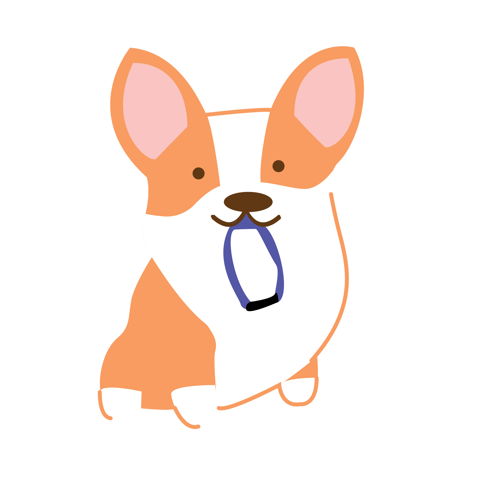
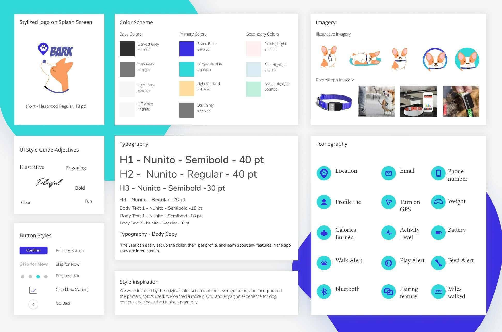
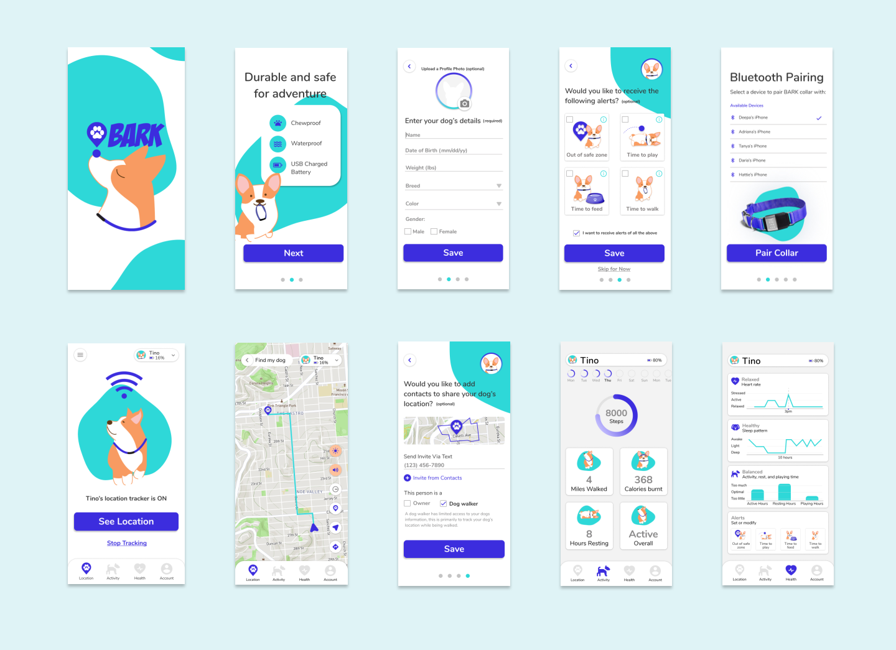

A 1-day hackathon design for the Bark smart-collar onboarding experience — set up the device, set up the dog, set up the human. Our submission was selected as a Top 10 Finalist out of 137 teams worldwide.

[ FIG.01 ] UX HACKATHON · 2020 BARK / SMART COLLAR 1 DAY · 5 DESIGNERSDog parents need peace of mind that their pets can be found quickly and efficiently if they wander away from home.
The American Humane Association estimates that 1 out of 3 pets become lost at some point in their lifetime — and according to the Coalition for Reuniting Pets and Families, less than 23% of lost pets in the U.S. are reunited with their owners.
How might we give pet owners peace of mind on the safety and security of their dog's well-being — and help reunite any lost dogs with their worried owners as quickly as possible?
Working remotely on Zoom, we brainstormed potential features for the app — running an affinity-mapping exercise and voting through a feature prioritization matrix to nominate what would actually ship in a 1-day sprint.

[ FIG.02 · Affinity map ]Based on our affinity mapping, we charted out a user flow for the four core onboarding tasks:

[ FIG.03 · User flow ]As a team, we generated lo-fidelity sketches for the different screens based on our task flow — independently at first, then converging to combine the strongest ideas into a unified set ready for hi-fi prototyping.

Sketch 01
Sketch 02
Sketch 03To make the onboarding feel engaging and fun, we illustrated a key mascot who guides the user through the setup process. The mark is friendly, approachable, and quietly hints at the brand's protective intent.

Logo · Mark
Mascot · SketchWe researched the UI style of Leverege and drew inspiration from their simple, bright, playful colors to design and brand the Bark app interface.

[ Style tile ]We applied the style guide to the lo-fi mockups and split the screens across the team — given the 1-day timeline. The hi-fi pass covered onboarding, the homepage, and the dog-profile pages.

[ Hi-fi composite ]We resolved minor UI and visual issues surfaced through usability testing, then put most of our remaining time into prototyping the onboarding flow — the heart of the value proposition.
Our design and team made the shortlist of 10 finalists out of 137 submissions worldwide.
I really, really loved the way this team not just presented the work but how they displayed the final prototype. Thinking through a lot of the small details that a user may face while onboarding and using the app. Great use of thought process.
— Hackathon judge · UX Hackathon 2020
We had a great time working on this challenge — the layout, branding, tone, app features, and the team chemistry under a tight clock. With more time, the team's roadmap looked like:
Validate the onboarding flow with real dog parents and iterate on the friction points the day-one timeline didn't allow for.
Export and share heart-rate, activity, and sleep data with a vet — closing the loop between collar, app, and clinic.
Cats first — same hardware concept, different behavioral assumptions in the IA.
Integrate social features so neighborhoods can flag missing pets and reunite them faster.